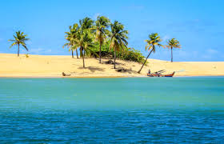

Foz do Rio São Francisco
A Foz do Rio São Francisco fica na divisa dos estados de Alagoas e Sergipe, local de grande beleza cênica, composto pelas águas limpas do rio, dunas, mangues, vegetação nativa, praia fluvial e marítima. O Rio São Francisco é um dos principais rios brasileiros, que nasce nas serras de Minas Gerais, percorre 2830 km e atravessa vários estados brasileiros até chegar ao Oceano Atlântico.
O que fazer em Foz do Rio São Francsico?
- Conhecer a cultura local
- Tirar fotos
- Visitar a feirinha de artesanato
- Comer comidas típicas
- Visitar a comunidade